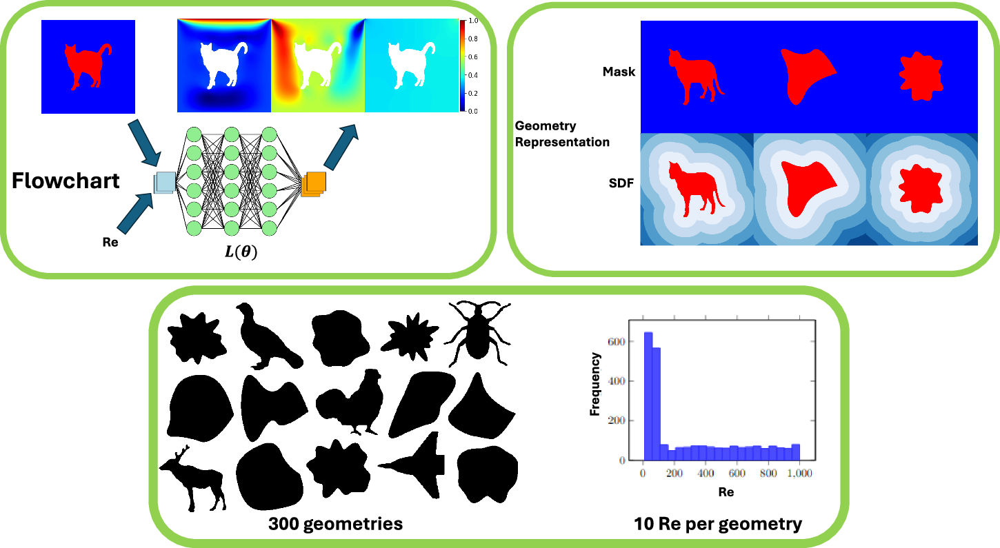
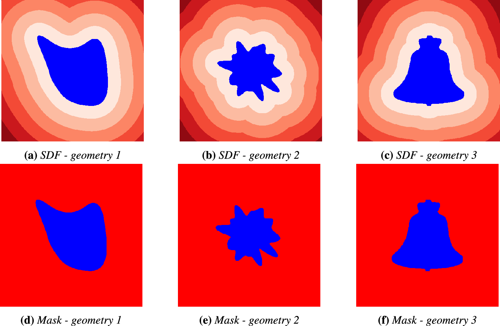
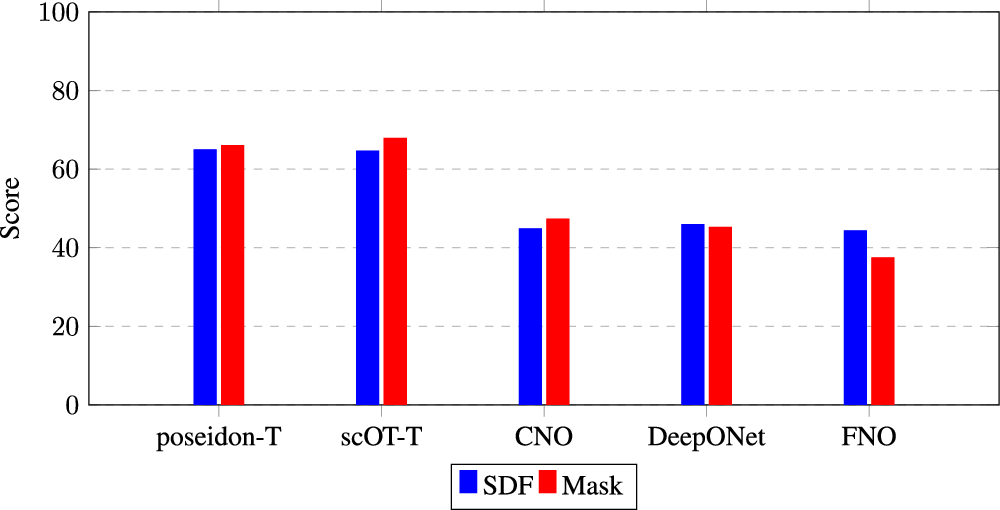
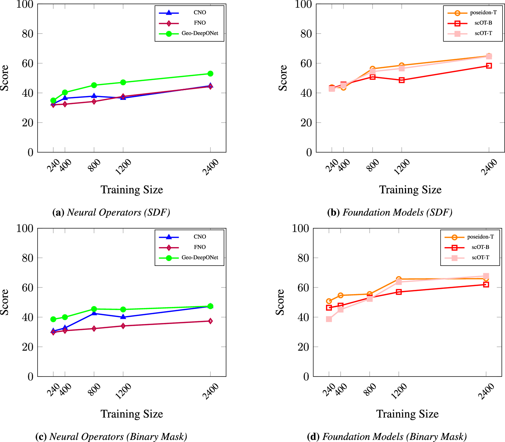
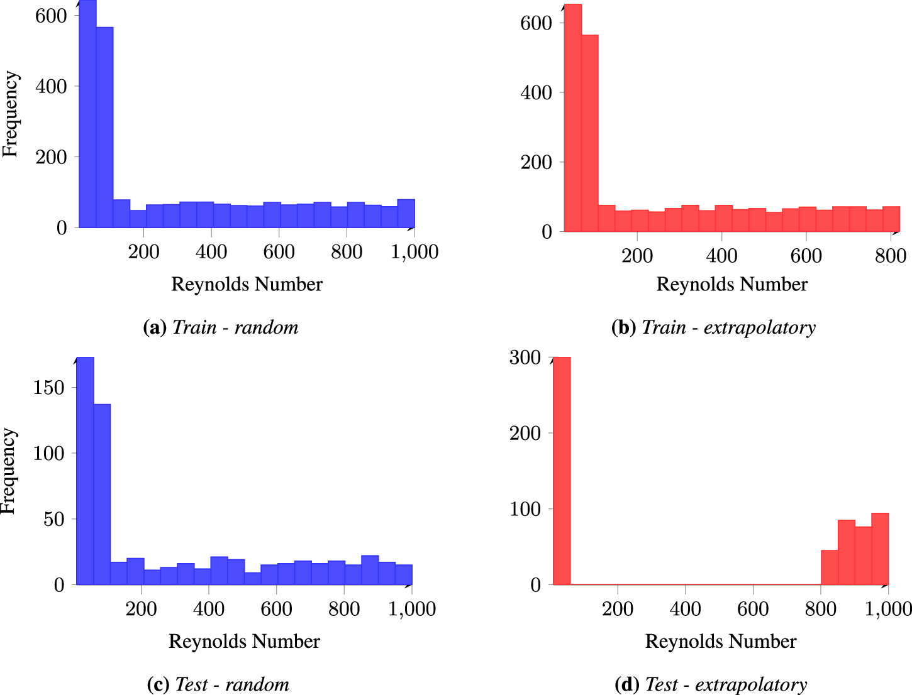
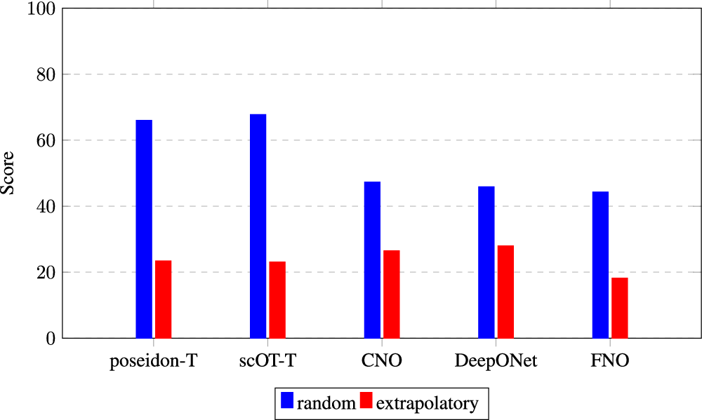
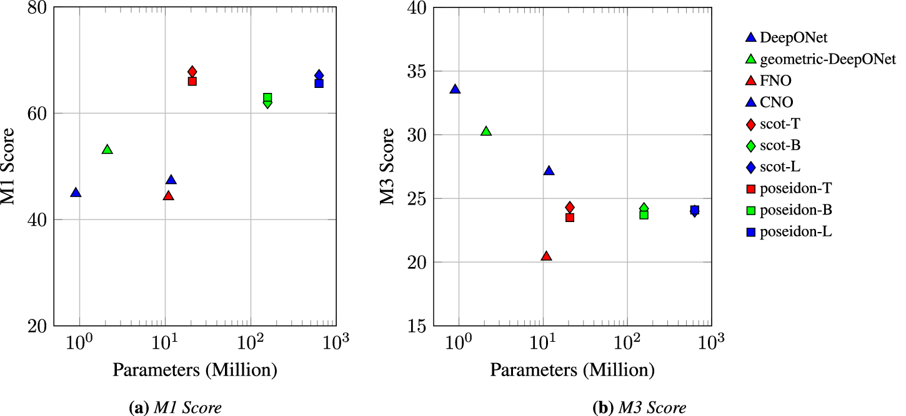

论文资料
Benchmarking scientific machine-learning approaches for flow prediction around complex geometries
已取得公开摘要，图文解读尚未完成
已取得公开摘要，图文解读尚未完成。取得完整资料并通过核验后，这个地址会更新为图文解读。
公开摘要
Rapid and accurate simulations of fluid dynamics around complicated geometric bodies are critical in a variety of engineering and scientific applications. While scientific machine learning (SciML) has shown considerable promise, most studies in this field are limited to simple geometries. This paper addresses this gap by benchmarking diverse SciML models, including neural operators and vision transformer-based foundation models, for fluid flow prediction over intricate geometries. We evaluate the impact of geometric representations—Signed Distance Fields (SDF) and binary masks—on model accuracy, scalability, and generalization using a high-fidelity dataset of steady-state flow over complex geometries. We introduce a unified scoring framework that integrates metrics for global accuracy, boundary layer fidelity, and physical consistency. Our findings reveal that newer foundation models significantly outperform neural operators, particularly in data-limited scenarios. In addition, binary mask representation enhances the performance of vision transformer models by up to 10%, while SDF representations improve neural operator performance by up to 7%. Despite these promises, all models struggle with out-of-distribution generalization, highlighting a critical challenge for future SciML applications. Our work paves the way for robust and scalable ML solutions for fluid dynamics across complex geometries.
原图未改动。以下图注来自标注的来源，不据此补写摘要未报告的实验结论。
已取得的论文原图


原文图注与出处
This figure illustrates the scientific ML framework that assesses neural operators and foundation models for fluid flow solvers. Flow simulations are performed for steady-state lid-driven cavity flow across various complex geometries and Reynolds numbers. The top left subpanel shows model inputs, including a randomly selected geometry with two inputs: the Reynolds number and a representation of the geometry. It also shows model outputs---x-velocity ( u ), y-velocity ( v ), and the pressure field. The bottom subpanel presents 15 randomly chosen geometries and a Reynolds number distribution bar chart of the training dataset. The top right subpanel contrasts two representations of a sample geometry: the binary mask and the signed distance field (SDF).
Rabeh, Ali et al.
原文图页 · CC BY 4.0



原文图注与出处
Comparison of score values for different models using Signed Distance Field (SDF) and binary mask representations. The scores are computed on the test dataset using a normalized error metric based on the M1 global accuracy metric ( S D F ≥0). The bar plot shows the score for each model, indicating the performance difference between SDF and mask representations.
Rabeh, Ali et al.
原文图页 · CC BY 4.0

原文图注与出处
a Neural operators with SDF representation (CNO, FNO, Geo-DeepONet). b Foundation models with SDF representation (scOT-B, scOT-T, poseidon-T). c Neural operators with binary mask representation. d Foundation models with binary mask representation. Scores are computed on the test dataset using a normalized error metric based on the M1 global accuracy metric ( S D F ≥0).
Rabeh, Ali et al.
原文图页 · CC BY 4.0已取得的论文原图




原文图注与出处
The scores are computed on the test dataset using a normalized error metric based on the M1 gloabal accuracy metric ( S D F ≥0). The bar plot shows the score for each model, indicating the difference in performance between random and extrapolatory data splits. Poseidon-T, scOT-T, and CNO use a binary mask representation of the geometry, while DeepONet and FNO use a Signed Distance Field (SDF).
Rabeh, Ali et al.
原文图页 · CC BY 4.0
